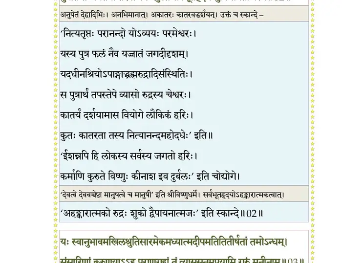
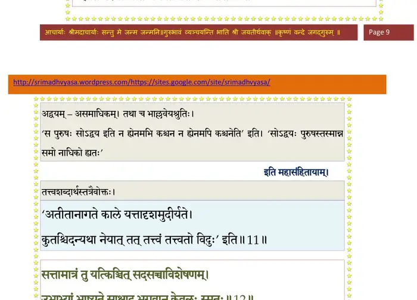
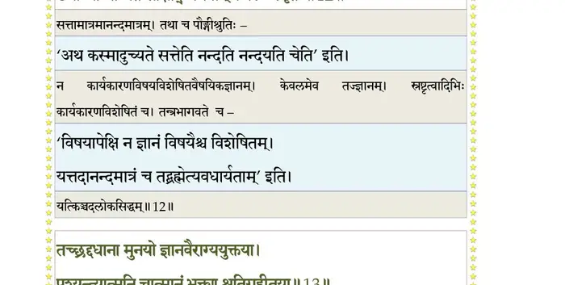
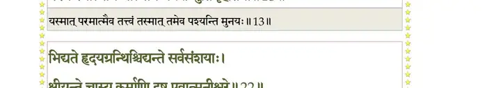
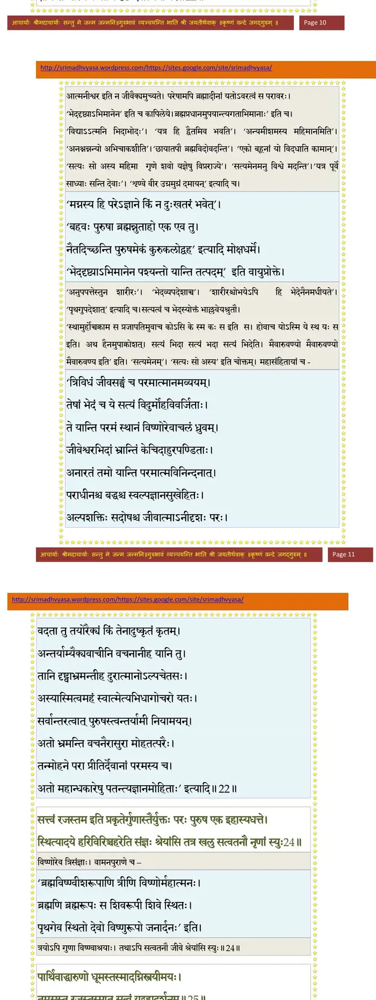
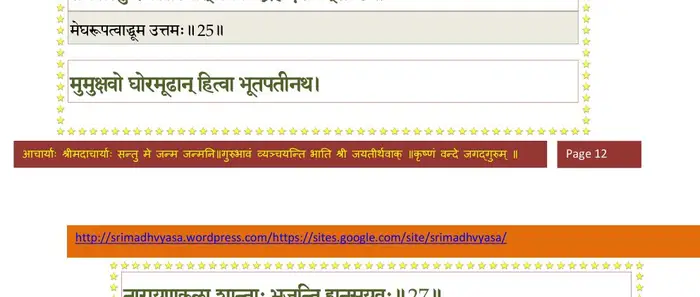
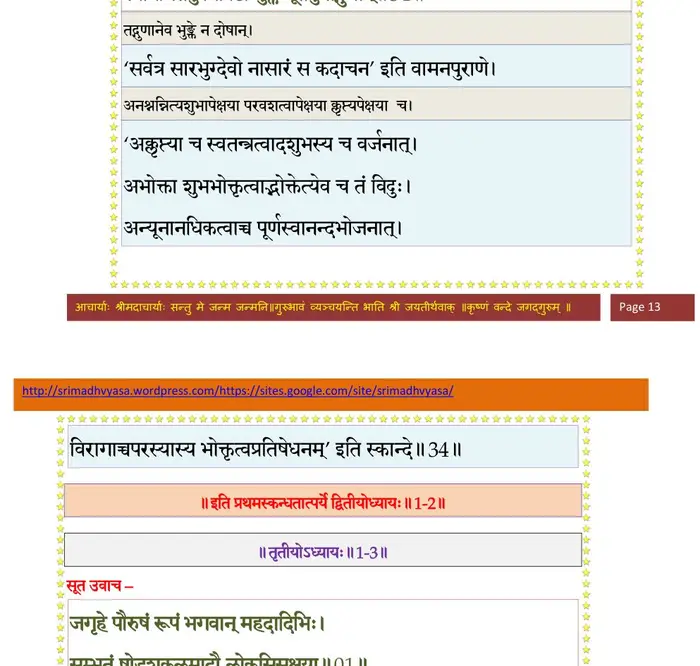

स्कन्ध 1 · अध्याय 2
श्लोक १
इति सम्प्रश्नसम्पृष्टो विप्राणां रौमहर्षणिः ।
प्रतिपूज्य वचस्तेषां प्रवक्तुमुपचक्रमे।। १ ।।
प्रतिपूज्य वचस्तेषां प्रवक्तुमुपचक्रमे।। १ ।।
श्लोक २
सूत उवाच–
यं प्रव्रजन्तमनुपेतमपेतकृत्यं
द्वैपायनो विरहकातर आजुहाव
पुत्रेति तन्मयतया तरवोऽपि नेदु-
स्तं सर्वभूतहृदयं मुनिमानतोऽस्मि।। २ ।।
यं प्रव्रजन्तमनुपेतमपेतकृत्यं
द्वैपायनो विरहकातर आजुहाव
पुत्रेति तन्मयतया तरवोऽपि नेदु-
स्तं सर्वभूतहृदयं मुनिमानतोऽस्मि।। २ ।।
भागवततात्पर्यनिर्णय

श्लोक ३
यः स्वानुभावमखिलश्रुतिसारमेक-
मध्यात्मदीपमतितीर्षतां तमोऽन्धम्
संसारिणां करुणयाऽऽह पुराणगुह्यं
तं व्याससूनुमुपयामि गुरुं मुनीनाम्।। ३ ।।
मध्यात्मदीपमतितीर्षतां तमोऽन्धम्
संसारिणां करुणयाऽऽह पुराणगुह्यं
तं व्याससूनुमुपयामि गुरुं मुनीनाम्।। ३ ।।
भागवततात्पर्यनिर्णय
श्लोक ४
नारायणं नमस्कृत्य नरञ्चैव नरोत्तम् ।
देवीं सरस्वतीं व्यासं ततो ग्रन्थमुदीरये।। ४ ।।
देवीं सरस्वतीं व्यासं ततो ग्रन्थमुदीरये।। ४ ।।
श्लोक ५
मुनयः साधु पृष्टोऽहं भवद्भिर्लोकमङ्गलम् ।
यत्कृतः कृष्णसंप्रश्नो येनात्माऽऽशु प्रसीदति।। ५ ।।
यत्कृतः कृष्णसंप्रश्नो येनात्माऽऽशु प्रसीदति।। ५ ।।
श्लोक ६
स वै पुंसां परो धर्मो यतो भक्तिरधोक्षजे ।
औतुक्यव्यवहिता ययाऽऽत्माऽऽशु प्रसीदति।। ६ ।।
औतुक्यव्यवहिता ययाऽऽत्माऽऽशु प्रसीदति।। ६ ।।
श्लोक ७
वासुदेवे भगवति भक्तियोगः प्रयोजितः ।
जनयत्याशु वैराग्यं ज्ञानञ्च यदहैतुकम्।। ७ ।।
जनयत्याशु वैराग्यं ज्ञानञ्च यदहैतुकम्।। ७ ।।
श्लोक ८
धर्मः स्वनुष्ठितः पुंसां विश्वक्सेनकथाश्रयाम् ।
नोत्पादयेद्यदि रतिं श्रम एव हि केवलम्।। ८ ।।
नोत्पादयेद्यदि रतिं श्रम एव हि केवलम्।। ८ ।।
श्लोक ९
धर्मस्य ह्यापवर्ग्यस्य नार्थोऽर्थायेह कल्पते ।
नार्थस्य धर्मैकान्तस्य कामो लाभाय हि स्मृतः।। ९ ।।
नार्थस्य धर्मैकान्तस्य कामो लाभाय हि स्मृतः।। ९ ।।
श्लोक १०
कामस्य नेन्द्रियप्रीतिर्लाभो जीवति यावता ।
जीवस्यातत्वजिज्ञासोर्नार्थो यश्चेह कर्मभिः।। १० ।।
जीवस्यातत्वजिज्ञासोर्नार्थो यश्चेह कर्मभिः।। १० ।।
श्लोक ११
वदन्ति तत्तत्वविदस्तत्वं यज्ज्ञानमद्वयम् ।
ब्रह्मेति परमात्मेति भगवानिति शब्द्यते।। ११ ।।
ब्रह्मेति परमात्मेति भगवानिति शब्द्यते।। ११ ।।
भागवततात्पर्यनिर्णय

श्लोक १२
सत्तामात्रं तु यत्किञ्चित्सदसच्चाविशेषणम् ।
उभाभ्यां भाष्यते साक्षाद्भगवान् केवलः स्मृतः।। १२ ।।
उभाभ्यां भाष्यते साक्षाद्भगवान् केवलः स्मृतः।। १२ ।।
भागवततात्पर्यनिर्णय

श्लोक १३
तच्छ्रद्दधाना मुनयो ज्ञानवैराग्ययुक्तया ।
पश्यन्त्यात्मनि चात्मानं भक्त्या श्रुतिगृहीतया।। १३ ।।
पश्यन्त्यात्मनि चात्मानं भक्त्या श्रुतिगृहीतया।। १३ ।।
भागवततात्पर्यनिर्णय

श्लोक १४
अतः पुम्भिर्द्विजश्रेष्ठाः वर्णाश्रमविभागशः ।
स्वनुष्ठितस्य धर्मस्य संसिद्धिर्हरितोषणम्।। १४ ।।
स्वनुष्ठितस्य धर्मस्य संसिद्धिर्हरितोषणम्।। १४ ।।
श्लोक १५
तस्मादेकेन मनसा भगवान् सात्वतां पतिः ।
श्रोतव्यः कीर्तितव्यश्च ध्येयः पूज्यश्च नित्यदा।। १५ ।।
श्रोतव्यः कीर्तितव्यश्च ध्येयः पूज्यश्च नित्यदा।। १५ ।।
श्लोक १६
यदनुध्यायिनो युक्ताः कर्मग्रन्थिनिबन्धनम् ।
छिन्दन्ति कोविदास्तस्य को न कुर्यात्कथारतिम्।। १६ ।।
छिन्दन्ति कोविदास्तस्य को न कुर्यात्कथारतिम्।। १६ ।।
श्लोक १७
शुश्रूषोः श्रद्दधानस्य वासुदेवकथारतिः ।
स्यान्महत्सेवया विप्राः पुण्यतीर्थनिषेवणात्।। १७ ।।
स्यान्महत्सेवया विप्राः पुण्यतीर्थनिषेवणात्।। १७ ।।
श्लोक १८
शृण्वतां स्वकथां कृष्णः पुण्यश्रवणकीर्तनः ।
हृद्यन्तस्थो ह्यभद्राणि विधुनोति सुहृत् सताम्।। १८ ।।
हृद्यन्तस्थो ह्यभद्राणि विधुनोति सुहृत् सताम्।। १८ ।।
श्लोक १९
नष्टप्रायेष्वभद्रेषु नित्यं भागवतसेवया ।
भगवत्युत्तमश्लोके भक्तिर्भवति नैष्ठिकी।। १९ ।।
भगवत्युत्तमश्लोके भक्तिर्भवति नैष्ठिकी।। १९ ।।
श्लोक २०
तदा रजस्तमोभावाः कामलोभादयश्च ये ।
चेत एतैरनाविद्धं स्थितं सत्वे प्रसीदति।। २० ।।
चेत एतैरनाविद्धं स्थितं सत्वे प्रसीदति।। २० ।।
श्लोक २१
एवं प्रसन्नमनसो भगवद्भक्तियोगतः ।
भगवत्तत्वविज्ञानं मुक्तसङ्गस्य जायते।। २१ ।।
भगवत्तत्वविज्ञानं मुक्तसङ्गस्य जायते।। २१ ।।
श्लोक २२
भिद्यते हृदयग्रन्थिश्छिद्यन्ते सर्वसंशयाः ।
क्षीयन्ते चास्य कर्माणि दृष्ट एवात्मनीश्वरे।। २२ ।।
क्षीयन्ते चास्य कर्माणि दृष्ट एवात्मनीश्वरे।। २२ ।।
भागवततात्पर्यनिर्णय

श्लोक २३
अतो वै कवयो नित्यं भक्तिं परमया मुदा ।
वासुदेवे भगवति कुर्वन्त्यात्मप्रसादनीम्।। २३ ।।
वासुदेवे भगवति कुर्वन्त्यात्मप्रसादनीम्।। २३ ।।
श्लोक २४
सत्वं रजस्तम इति प्रकृतेर्गुणास्तै-
र्युक्तः परः पुरुष एव इहास्य धत्ते ।
स्थित्यादये हरिविरिञ्चहरेति सञ्ज्ञाः
श्रेयांसि तत्र खलु सत्वतनौ नृणां स्युः।। २४ ।।
र्युक्तः परः पुरुष एव इहास्य धत्ते ।
स्थित्यादये हरिविरिञ्चहरेति सञ्ज्ञाः
श्रेयांसि तत्र खलु सत्वतनौ नृणां स्युः।। २४ ।।
श्लोक २५
पार्थिवाद्दारुणो धूमस्तस्मादग्निस्त्रयीमयः ।
तमसस्तु रजस्तस्मात्सत्वं यद् ब्रह्मदर्शनम्।। २५ ।।
तमसस्तु रजस्तस्मात्सत्वं यद् ब्रह्मदर्शनम्।। २५ ।।
भागवततात्पर्यनिर्णय

श्लोक २६
भेजिरे मुनयोऽथाग्रे भगवन्तमधोक्षजम् ।
सत्वं विशुद्धं क्षेमाय कल्पते नेतराविह।। २६ ।।
सत्वं विशुद्धं क्षेमाय कल्पते नेतराविह।। २६ ।।
श्लोक २७
मुमुक्षवो घोरमूढान् हित्वा भूतपतीनथ ।
वासुदेवकलाः शान्ता भजन्ति ह्यनसूयवः।। २७ ।।
वासुदेवकलाः शान्ता भजन्ति ह्यनसूयवः।। २७ ।।
भागवततात्पर्यनिर्णय
श्लोक २८
रजस्तमःप्रकृतयः समशीलान् भजन्ति वै ।
पितृभूतप्रजेशादीन् श्रियैश्वर्यप्रजेप्सवः।। २८ ।।
पितृभूतप्रजेशादीन् श्रियैश्वर्यप्रजेप्सवः।। २८ ।।
भागवततात्पर्यनिर्णय
श्लोक २९
वासुदेवपरा वेदा वासुदेवपरा मखाः ।
वासुदेवपरा योगा वासुदेवपराः क्रियाः।। २९ ।।
वासुदेवपरा योगा वासुदेवपराः क्रियाः।। २९ ।।
श्लोक ३०
वासुदेवपरं ज्ञानं वासुदेवपरं तपः ।
वासुदेवपरो धर्मो वासुदेवपरा गतिः।। ३० ।।
वासुदेवपरो धर्मो वासुदेवपरा गतिः।। ३० ।।
श्लोक ३१
स एवेदं ससर्जाग्रे भगवानात्ममायया ।
सदसद्रूपया चासौ गुणमय्याऽगुणो विभुः।। ३१ ।।
सदसद्रूपया चासौ गुणमय्याऽगुणो विभुः।। ३१ ।।
भागवततात्पर्यनिर्णय
श्लोक ३२
तया विलसितेष्वेषु गुणेषु गुणवानिव ।
अन्तःप्रविष्ट आभाति विज्ञानेन विजृम्भितः।। ३२ ।।
अन्तःप्रविष्ट आभाति विज्ञानेन विजृम्भितः।। ३२ ।।
भागवततात्पर्यनिर्णय
श्लोक ३३
यथा व्यवहितो वह्निर्दारुष्वेकः स्वयोनिषु ।
नानेव भाति विश्वात्मा भूतेषु च तथा पुमान्।। ३३ ।।
नानेव भाति विश्वात्मा भूतेषु च तथा पुमान्।। ३३ ।।
श्लोक ३४
असौ गुणमयैर्भावैर्भूतसूक्ष्मेन्द्रियादिभिः ।
स्वनिर्मितेषु निर्विष्टो भुंक्ते भूतेषु तद्गुणान्।। ३४ ।।
स्वनिर्मितेषु निर्विष्टो भुंक्ते भूतेषु तद्गुणान्।। ३४ ।।
भागवततात्पर्यनिर्णय

श्लोक ३५
भावयन्नेष सत्वेन लोकान् वै लोकभावनः ।
लीलावतारानुगतस्तिर्यङ्नरसुरादिषु।। ३५ ।।
लीलावतारानुगतस्तिर्यङ्नरसुरादिषु।। ३५ ।।
।। इति श्रीमद्भागवते प्रथमस्कन्धे द्वितीयोऽध्यायः ।।